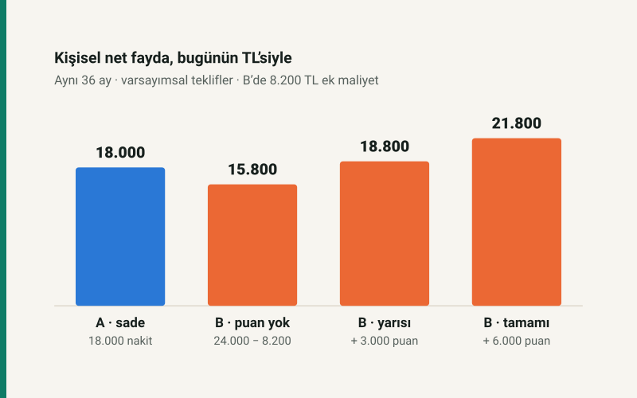

Promosyonun fiyatladığı şey müşteri ilişkisidir
Emekli maaşı promosyonu, ekonomik açıdan bankanın düzenli ödeme akışını ve müşteri ilişkisini kazanmak için bugün yaptığı harcamadır. Emekli açısından ise taahhüt, kullanım koşulları ve olası geçiş maliyetleri karşılığında elde edilen bir faydadır. İki taraf aynı işlemden kazanç sağlayabilir; bunun ölçüsü reklamda görülen toplam değil, her tarafın kendi net değeridir.
Bu incelemede banka adı, güncel kampanya sıralaması veya piyasa faiz tahmini bulunmuyor. Bütün tutarlar, oranlar ve A–B seçenekleri varsayımsaldır. Amaç, kampanya değişse bile kullanılabilecek bir karşılaştırma yöntemi kurmak. Hukuki çerçeveye ilişkin kaynak kontrol tarihi ’dır.
Maaş zammı, yatırım getirisi ve promosyon ayrı kavramlardır
Promosyon, emekli aylığının düzenli tutarını artırmaz. SGK’nın açıklaması, ödemeyi 5510 sayılı Kanun’daki aylık ve diğer sosyal güvenlik ödemelerinden ayırarak protokol çerçevesinde ele alır. Bu ayrım, imzalanmış taahhüdün önemsiz olduğu anlamına gelmez; hakkın kapsamı için protokol ve sözleşme koşulları birlikte okunmalıdır. Kaynak: SGK, Emekli Promosyonu ve Banka Değişikliği, sorular 2–3.
Promosyonun maaşa oranını hesaplamak büyüklüğünü anlatabilir; fakat bu oran bir mevduat faizi değildir. Emekli üç yıllık bütün maaşını başlangıçta bankaya yatırmaz. Benzer şekilde 18.000 TL’yi 36 aya bölerek bulunan 500 TL, yalnızca aritmetik aylık karşılıktır. Bugün topluca alınan parayla her ay sonunda 500 TL almak, paranın zaman değeri nedeniyle aynı değildir.
Banka ne satın alır, nasıl geri kazanmayı bekler?
Banka açısından ekonomik değer birkaç kanaldan oluşabilir: hesapta tutulan bakiyenin fonlama katkısı, ödeme ve kart kullanımından kalan net gelir, müşterinin ihtiyaç duyduğu diğer hizmetler ve ilişkinin devamlılığı. Müşteri bulmak için reklam vermek de promosyon ödemek de bir edinme harcamasıdır; promosyonda bedelin bir bölümü doğrudan müşteriye gider. Bunlar genel iktisadi mekanizmalardır, belirli bir bankanın açıklanmamış stratejisine ilişkin iddia değildir.
Burada maaş akışı ile ortalama bakiye ayrılmalıdır. Her ay 30.000 TL yatıp ay boyunca eşit hızda tamamen harcanıyorsa, idealize edilmiş ortalama bakiye yaklaşık 15.000 TL’dir. Üç yıllık 1.080.000 TL maaş toplamı, bankanın üç yıl boyunca kullanabildiği sabit bir mevduat değildir. Maaşın hemen çekilmesi ve başka birikimlerin hesapta tutulması sonucu farklılaştırır.
Örneğin 15.000 TL ortalama bakiyeye, tüm ilgili düzeltmeler sonrası yıllık 10 yüzde puanlık net fonlama avantajı atfedildiğini varsayalım. Katkı yılda 1.500 TL, basit aylık karşılığıyla 125 TL olur. Bu tutarı tek başına yüksek bir peşin promosyonun gerekçesi saymak güçtür; diğer gelirler, maliyetler ve ilişki süresi de hesaba girmelidir. Yüzde 10 burada piyasa oranı değil, model girdisidir.
Bireysel mevduatın davranışsal istikrarı bankacılık açısından ayrıca değerlidir. Basel çerçevesi, aynı vadede bireysel mevduat ile bazı toptan fonlama türlerinin istikrarını farklı kabul eder. Bu, her emekli hesabının aynı değerde olduğu veya maaşın belirli bir katının otomatik krediye dönüşeceği anlamına gelmez. Kaynak: Basel Komitesi, NSFR, 30.2.
18.000 TL promosyon için gereken aylık katkı
Bankanın bugün 18.000 TL ödediğini, ilişkinin 36 ay sürdüğünü ve her ay sonunda aynı net katkıyı elde ettiğini düşünelim. Aylık iskonto oranı %1,5 olsun. Net katkı; fonlama yararı ve diğer gelirlerden hizmet, operasyon, ödül, beklenen zarar ve ilgili sermaye maliyetleri ayrıldıktan sonraki tutardır. Aynı fonlama avantajı, kredi marjına zaten dahilse ikinci kez eklenmez.
Bankanın net bugünkü değeri = −18.000 + G × [1 − (1,015)⁻³⁶] / 0,015
Burada G aylık net katkıdır. Sonraki kampanya dönemi için ek değer, erken ayrılış ve promosyon iadesi hesaba katılmamıştır. Modelin başabaş katkısı yaklaşık 650,74 TL/aydır.
| Aylık net katkı | Net bugünkü değer | Modelin sonucu |
|---|---|---|
| 400 TL | −6.935,73 TL | Maliyet karşılanmıyor |
| 650 TL | −20,56 TL | Başabaşın biraz altında |
| 900 TL | +6.894,62 TL | Pozitif ekonomik değer |
Dolayısıyla bankanın her emekli müşteriden kesin kazandığı da yüksek promosyonun mutlaka zarar ettirdiği de söylenemez. Gerçek sonuç için müşteri başına katkı ve davranış verisi gerekir. Kamuya açıklanmamış bu değerleri kampanya başlığından çıkarmak mümkün değildir.
Kamu ve özel bankalar aynı modelde nasıl karşılaştırılır?
Temel nakit akışı hesabı her iki banka grubu için de geçerlidir. Farkı yaratabilecek değişkenler mevcut müşteri tabanı, fonlama ihtiyacı, hizmet maliyeti, erişim ağı, müşterinin kullanacağı ürünler ve büyüme hedefidir. Daha yüksek teklif daha yüksek ilişki değeri beklentisini, daha agresif müşteri edinme tercihini veya farklı koşulları yansıtabilir; hangi gerekçenin baskın olduğunu yalnızca teklif tutarı göstermez.
Kamu bankasının ödediği promosyonu doğrudan bütçeden yapılan sosyal yardım, özel bankanın teklifini de otomatik olarak tüketici zararı diye sınıflandırmak ekonomik analizin yerini varsayımla doldurur. Fonlama ve mülkiyet yapısı ayrı araştırma konularıdır. Emeklinin karşılaştırmasında ise aynı vade, aynı kullanılabilir fayda, erişilebilir hizmet ve aynı maliyet tanımı kullanılmalıdır.
Emeklinin net faydası: reklam toplamından kişisel değere
Karşılaştırılacak büyüklük şöyle kurulabilir:
net fayda = nakit
+ kullanılabilir ödüllerin bugünkü değeri
+ gerçekten tasarruf edilen ücretler
− ek maliyetler − geçiş giderleri
− varsa eski promosyon iadesi
Farklı tarihlerdeki tutarlar aynı tarihe indirgenmeli; günlük bankacılık hizmetinin ulaşım, zaman ve erişim değeri ayrıca değerlendirilmelidir.
Aşağıdaki iki temsili teklifin taahhüdü 36 ay, peşin ödeme zamanı aynıdır. Eski promosyon iadesi ve hizmet kalitesi farkı yoktur. A seçeneği ek ürün koşulu olmadan 18.000 TL nakit verir. B seçeneği 24.000 TL nakit ve en fazla 6.000 TL puan sunar. B için 7.000 TL ekonomik ek tüketim maliyeti ve bugünkü değerle 1.200 TL ürün/işlem gideri oluştuğunu varsayıyoruz.
7.000 TL, sırf kampanya için yapılan alışverişin kişiye sağladığı fayda da düşüldükten sonra kalan maliyettir. Zaten alınacak gıda veya ilaç için yapılan bütün harcamayı promosyon maliyeti saymak yanlış olur. Nakit bütçede yapılan ödeme ayrıca görünür; ekonomik kayıp hesabında ise alınan malın kişisel değeri yok sayılmaz.
| Seçenek | Nakdin değeri | Puanın kullanılabilir değeri | Ek maliyet | Net fayda |
|---|---|---|---|---|
| A: sade teklif | 18.000 | 0 | 0 | 18.000 |
| B: puan kullanılamıyor | 24.000 | 0 | 8.200 | 15.800 |
| B: puanın yarısı değerli | 24.000 | 3.000 | 8.200 | 18.800 |
| B: puanın tamamı değerli | 24.000 | 6.000 | 8.200 | 21.800 |

B’nin A’yı geçmesi için puanların bugünkü kullanılabilir değeri 2.200 TL’yi aşmalıdır. Eşikte iki teklif aynıdır. Ek maliyetler gerçekte daha düşükse B daha kolay öne geçer; ek borç faizi veya kullanılmayan ücretli ürünler varsa avantaj azalır. Model, koşullu teklifin mutlaka kötü olduğunu değil, sonucun kişiye bağlı olduğunu gösterir.
Puan ile nakit aynı mı; faizsiz kredi ne kadar faydadır?
Puanın değeri; kazanma koşulunun sağlanmasına, son kullanma tarihine, geçerli işyerlerine ve zaten planlanan harcamada kullanılabilmesine bağlıdır. Basit bir yaklaşım beklenen değer = ödül tutarı × kazanma olasılığı × kazanılırsa kullanılabilir pay olabilir. Ödeme gecikiyorsa zaman indirimi de uygulanır. Bunlar kişisel varsayımlardır; ölçülmemiş olasılıkları kesin bilgi gibi yazmamak gerekir.
Kredi anaparası ise ödül değildir: geri ödenir. Masrafsız, bugün verilen 30.000 TL’nin altı ay boyunca ay sonlarında 5.000 TL olarak geri ödendiğini düşünelim. Aynı risk ve vadeye uygun varsayımsal aylık iskonto oranı %2 ise finansman avantajı 30.000 − Σ[5.000 / (1,02)ᵗ] hesabıyla, t = 1…6 için yaklaşık 1.992,85 TL olur. Avantajı 30.000 TL nakit promosyon gibi toplamak aynı parayı hem alınmış hem geri ödenmeyecekmiş sayar.
İskonto oranı değişirse hesaplanan avantaj da değişir; ücret veya sigorta maliyeti varsa bunların bugünkü değeri düşülür. Bu örnek borçlanma önerisi değildir. Krediye ihtiyacı olmayan, parayı değerlendirmeyen ve yeni harcama yapan kişinin sonucu farklıdır. Ayrıca taksitin ödenebilir olması, teklifin hesaplanan değerinden ayrı bir koşuldur.
Banka değiştirme: iade, yeni süre ve hizmet maliyeti
SGK rehberi, taahhüt sürerken banka değişiminde promosyonun kalan süreyle orantılı iadesini ve diğer uygunluk koşullarını açıklıyor. Aylık karşılığı kullanılan kredi ve ilgili sözleşmeler taşımayı etkileyebilir. Kesin iade, ek ödül geri alma ve işlem koşulları bankadan öğrenilmelidir. Kaynak: SGK rehberi, sorular 16–21.
36 ay için 12.000 TL alınmış, 12 ay geçmiş olsun. Aylık orantılı basit modelde kalan 24 ay için iade 12.000 × 24 / 36 = 8.000 TL olur. Yeni banka 18.000 TL peşin verirse geçiş gününde, diğer giderler hariç, 10.000 TL nakit kalır. Gerçek hesapta gün sayısı ve sözleşme ayrıntıları farklılık yaratabilir.
Bu 10.000 TL, banka değiştirmenin bütün ekonomik kazancı değildir. Eski taahhüt 24 ay sonra bitecekken yenisi 36 ay sürer. Adil değerlendirme, aynı bitiş tarihine kadar eski bankada kalma, bugün geçme ve daha sonra yenileme seçeneklerini karşılaştırır. Dönem sonunda devam eden taahhüt ve olası iade yükü de hesaba katılır. Gelecekteki promosyon bilinmediğinden birkaç yenileme senaryosu gerekir; bugünkü farkla kesin üç yıllık kazanç ilan edilemez.
Yakın ATM’nin kaybı, şubeye ulaşım, dijital işlemlerde destek ihtiyacı ve talimat taşıma süresi de değerlidir. Yılda birkaç işlem yapan kişiyle her hafta şubeye giden kişinin aynı promosyon farkına yüklediği değer farklı olabilir. Hesapta tutulması istenen ek bakiye varsa, bu paranın alternatif kullanımından vazgeçmenin maliyeti de yazılmalıdır.
Yarışın faydası ve maliyeti kimde kalır?
Rekabet, müşteri ilişkisinin ekonomik değerinin bir bölümünü emekliye aktarabilir; ücret indirimleri ve daha iyi hizmet de sağlayabilir. Bankalar açısından ise edinme maliyetini artırır. Beklenen katkısı düşük müşterilere yüksek bedel ödenirse promosyon bütçesi zarar üretebilir. Bunun bütün maliyetinin mutlaka aynı müşteriden geri alınacağını veya bankanın her müşteriden kazanacağını varsaymak gerekmez.
Olumsuz taraf, karşılaştırmanın zorlaşmasıdır: nakit, puan, alışveriş indirimi ve kredi limitinin tek başlıkta toplanması farklı değerleri eşit gösterir. Çok sayıda koşul, teklifleri okuyup takip etmek için zaman gerektirir. Ödülü kaçırmama isteği ihtiyaç dışı tüketimi veya borçlanmayı tetiklediğinde, yüksek görünen ödeme düşük net faydaya dönüşebilir.
Toplam ekonomi açısından promosyon ödemesi tek başına yeni üretim yaratıldığının kanıtı değildir; bankadan müşteriye bir aktarım içerir. Daha etkin ödeme hizmeti ve daha düşük işlem maliyeti gerçek kazanım yaratabilir. Sürekli banka taşımanın işlem yükü, gereksiz ürün kullanımı ve yanlış bütçe kararları ise kaynak tüketebilir. Net toplumsal etkiyi ölçmek için bu hizmet kazanımları, davranış değişimleri ve maliyetler birlikte incelenmelidir.
Karar ölçüsü: aynı vadede, kullanılabilir net değer
Karşılaştırmaya önce peşin nakdi ve taahhüt süresini yazarak başlayın. Ardından yalnızca kullanabileceğiniz ödülleri ekleyin; ek tüketim maliyetini, ücretleri, borç maliyetini, varsa iade ve geçiş giderlerini çıkarın. Son olarak ödeme tarihlerini ve hizmet erişimini eşitleyin. Bu yöntem, kamu veya özel banka etiketinden ve kampanyanın büyüklük iddiasından bağımsız çalışır.
Enflasyon ve satın alma gücü farklı tarihlerdeki paranın neden ayrı değerlendirilmesi gerektiğini; kredinin yıllık maliyeti ise ilan edilen faiz dışındaki kalemlerin etkisini açıklar. Buradaki iskonto modellerinde nominal nakit akışları nominal oranla kullanılır; enflasyon ayrıca ikinci kez düşülmez.
Kaynaklar, yöntem ve sınırlar
Kurumsal çerçeve için SGK’nın Emekli Promosyonu ve Banka Değişikliği rehberi; fonlama istikrarı için Basel Komitesi’nin NSFR standardı kullanılmıştır. Banka ve emekli modelleri bu yazı için kurulmuş ekonomik analizlerdir; bu kurumların hesapladığı müşteri kârlılığı veya önerdiği teklifler değildir. Hukuki açıklamalar kaynak kontrol tarihindeki çerçeveyi özetler; kampanya koşulları yerine geçmez.
Hesaplar tam hassasiyetle yapılmış, para sonuçları kuruşa yuvarlanmıştır. Banka modeli sabit katkı ve tam 36 aylık ilişki; emekli tablosu eşit süre ve bugünkü değerler varsayar. Sayısal doğrulama kodu yeniden hesaplamaya açıktır. Hata bildirimi ve düzeltme yaklaşımı için yayın ilkelerine ulaşabilirsiniz.